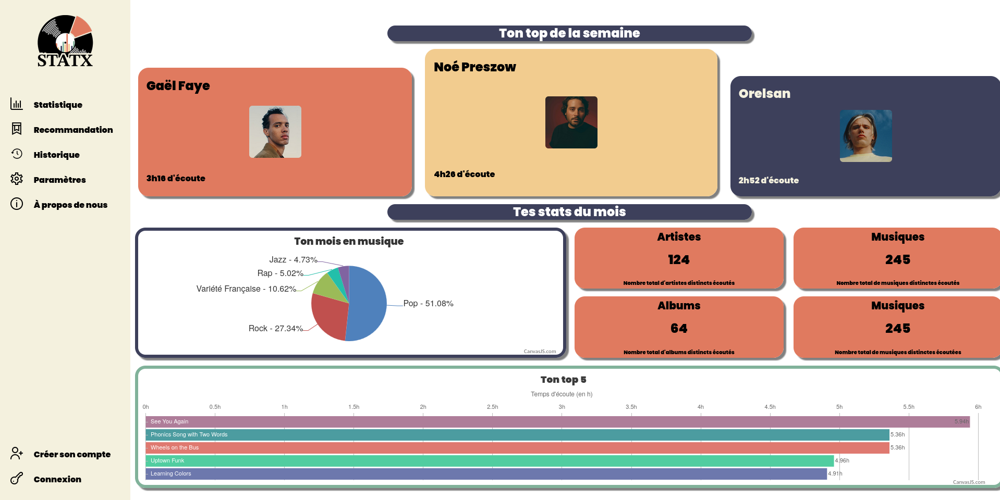
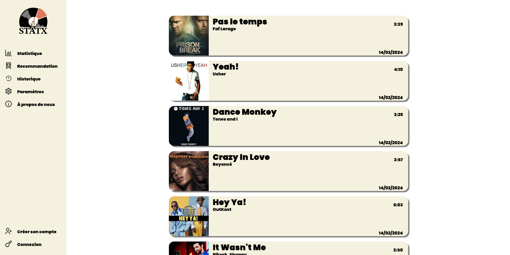
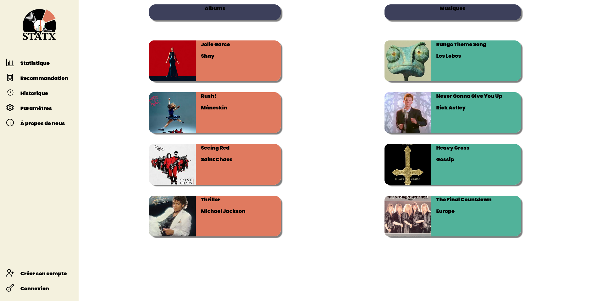

Sur ce projet nous étions 2 à travailler , l'objectif était de faire une génération du terrain avec un quadtree dans un premier temps , puis dans un second temps nous avons implementer différentes fonctionnalités proposer Cliquez ici pour télécharger le projets en zip.

Sur cette image on peut comment était le rendus du jeu de base avec un quadtree fonctionnel. Il n'y avait aucune autre fonction implementer simplement le quadtree

Voici un première exemple de fonction que nous avons implémentés , il s'agit d'une génération de terrain aléatoire.
Voici un deuxiéme exemple de fonction que nous avons implémentés , il s'agit de téléporteurs que le joueur pouvait placer, en appuyant sur la touche "p", sur le personnage. Puis il pouvait se téléporter en appuyant sur la touche "t".
Sur ce projet nous étions 4 à travailler , il avait pour but de faire un site web , sans aller jusqu'a héberger le site sur un serveur par manque de temps , respectant des régles d'ergonomie apprise en cours comme l'emplacement des éléments ou le nombre de clique pour trouver une informations ainsi que d'autres régles à respecter.Cliquez ici pour télécharger le projets en zip
Voici la page d'accueil du site , on peut y retrouver le logo que nous avons crée en haut gauche , le menus permettant l'accés au différentes page et le contenus principale.
Voici la page historique ou l'on retrouve , le logo , le menus pour la naviguabilités ainsi que le contenus de la page, les musiques écoutés avec la date d'écoute , la durée de la musique , le titre et l'album.
Voici la page recommandations de notre site ou l'on retrouve , le logo , le menus pour la naviguabilités ainsi que le contenus de la page , on y retrouve des recommandations de différents album et différentes musiques.